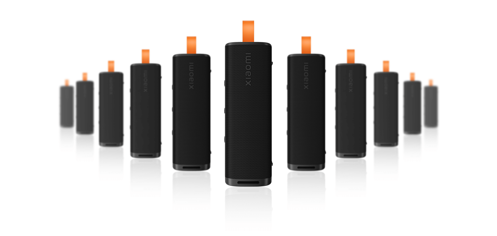

Xiaomi Sound Outdoor

Experiência sonora imersiva
30W de potência sonora
Portátil e poderoso
Design único com uma ampla área de malha. Essa característica especial permite que o som flua de maneira mais livre e natural, resultando em uma experiência sonora extraordinariamente transparente e equilibrada. Cada detalhe da sua música favorita será revelado com uma clareza cristalina.
Um subwoofer dedicado e dois radiadores passivos de grande porte
Modo exclusivo de aumento de graves
Equipado com dois radiadores passivos de grande porte em ambos os lados, a caixa de som oferece graves mais cheios e ricos para sons de percussão dinâmicos, naturais e energéticos.

Cuidadosamente ajustado
para uma qualidade de som magistral

+200 estilosos mostradores de relógio.
Expresse sua individualidade.


Descubra uma variedade de mostradores de relógio únicos e personalizáveis, o estilo e a funcionalidade estão ao seu dispor.
Vida útil da bateria de até 20 dias
Smartwatch de longa duração
Equipado com uma bateria de longa duração e um chip para eficiência energética que otimiza a vida útil da bateria em até 20 dias em uso*. O cabo de carregamento magnético permite que você recarregue com um simples toque, para usar o smartwatch sem preocupações em diversos modos:
10 dias
Tela sempre ativa
30 dias
Economia de bateria
20 dias
Uso padrão*
-25%*
Consumo energético

Chamada telefônica Bluetooth®
Levante o pulso para se comunicar


O Redmi Watch 4 se conecta ao seu smartphone via Bluetooth, permitindo que você veja e rejeite chamadas no seu relógio e participe de conversas com o microfone e alto-falante embutidos, sem a necessidade de tirar seu smartphone do bolso.

Monitoramento preciso
com sensor PPG de 4 canais


Maior precisão de monitoramento
A configuração do sensor PPG* foi atualizada para incluir 4 canais para ajudar a aumentar a precisão do monitoramento de saúde.
Monitoramento inteligente do sono
Com a ajuda de tecnologias científicas e meticulosas de monitoramento do sono, o relógio registra sua condição de sono em tempo real em diferentes estágios, como sono profundo, sono leve e REM, melhorando seus hábitos de sono e qualidade.


Monitoramento de saúde completo
Seu guardião de pulso

Monitoramento da
saturação de oxigênio
no sangue durante todo o dia*
Envia alertas de vibração quando a saturação de
oxigênio no sangue está muito baixa.
Monitoramento da
frequência cardíaca ao longo do dia*
Monitoramento contínuo e preciso da frequência cardíaca
para proteger sua saúde cardiovascular a todo momento.
Monitoramento de estresse
Exercícios de respiração
serão enviados quando seu nível de
estresse atingir duas vezes seguidas o valor de 80*.


Uma ampla variedade de modos de esporte, incluindo corrida ao ar livre e interna, caminhada, ciclismo e muito mais. Antes do seu exercício, você pode aquecer* seguindo as imagens de movimento de um treinador virtual e adotar a postura correta para ajudar a evitar lesões.
Posicionamento por satélite independente
Monitore sua rota de exercícios a qualquer momento


Equipado com um chip de localização GNSS, funciona em conjunto com seu smartphone ou de forma autônoma. Cinco sistemas de posicionamento por satélite são suportados para rastrear seus passos com precisão.
Combinação estéreo
Qualidade de som imersiva superior
Conecte dois modelos idênticos de caixas de som para criar uma combinação estéreo inteligente*, proporcionando experiências musicais ainda mais imersivas.

Pressione brevemente o botão de conexão em cada uma das duas caixas de som, e as duas caixas próximas irão se emparelhar automaticamente e operar como canais esquerdo e direito, respectivamente.
Expansível até 100 unidades
Experimente um som extraordinário
O recurso de Emparelhamento Multi-Caixas permite que você crie um poderoso sistema de áudio conectando até 100 caixas de som inteligentes para reprodução sincronizada, preenchendo cada canto do seu espaço* com melodias encantadoras. Pressione e segure o botão de conexão por 3 segundos em cada caixa de som, e todas as caixas se emparelharão automaticamente. Todas as caixas reproduzirão o mesmo conteúdo.
Atenda chamadas
sem usar as mãos
Atenda chamadas recebidas com um simples toque para conversas fáceis no modo mãos-livres com som nítido e cristalino. Agora você pode desfrutar de bate-papos com amigos e familiares de longe enquanto realiza várias tarefas ao mesmo tempo.
Avisos legais:
*As imagens nesta página são apenas para fins ilustrativos e podem não ser representações exatas do produto. Os parâmetros do produto são apenas para referência. Alguns parâmetros do produto podem variar devido a fatores externos, como ambiente e diferenças nos sistemas de smartphones. Consulte o produto real para obter detalhes.
*Os dados de duração da bateria são provenientes do Laboratório Interno da Xiaomi e foram medidos com configurações de volume padrão no modo Bluetooth. A duração real da bateria e os tempos de espera podem variar dependendo de fatores como volume, fontes de áudio, efeitos sonoros, interferência ambiente, funções/modos habilitados e hábitos de uso. Consulte o uso real. O modo Bluetooth entrará no modo de suspensão e a caixa de som será desligada automaticamente quando não houver atividade ou entrada de áudio. Isso ajuda a prolongar o tempo de serviço do produto.
*A Xiaomi Sound Outdoor não é uma caixa de som à prova d'água profissional e oferece apenas recursos básicos de proteção contra respingos e poeira. A eficácia da proteção contra respingos e poeira pode diminuir ao longo do tempo com o desgaste. Não carregue a caixa de som debaixo d'água ou em ambientes úmidos. Danos causados por água não são cobertos pela garantia.
*A combinação estéreo suporta a conexão de duas caixas de som Xiaomi Sound Outdoor para obter uma experiência de som surround. Ela é projetada para reprodução de música. Quando usada para reproduzir vídeos, o áudio e o vídeo podem ficar dessincronizados devido a fatores do dispositivo ou da rede.
*Peso: A Xiaomi Sound Outdoor pesa 597g ± 15g.